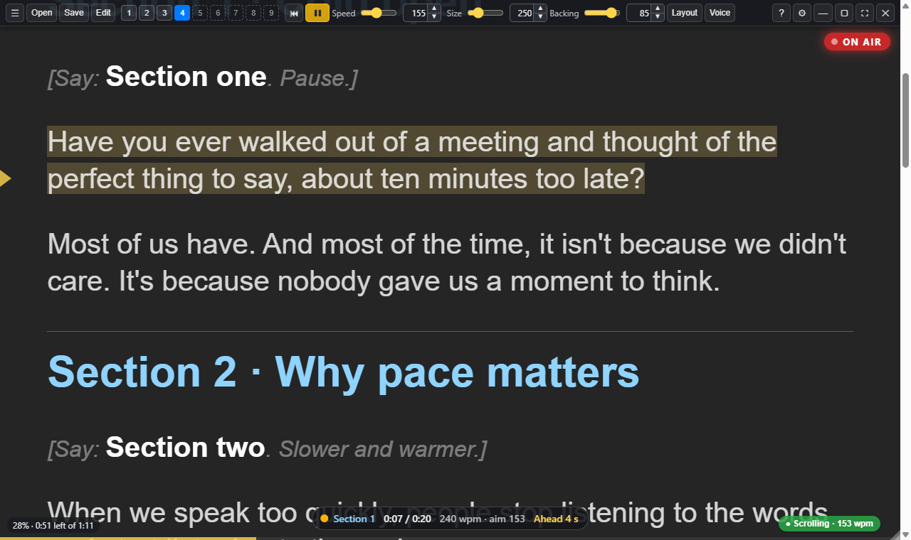

Free · Open source · MIT licence
Sightline Prompter
The teleprompter that works with your AI.
A see-through desktop teleprompter for speakers, content creators and learning teams recording to camera.
By a speaker, for speakers. By a content creator, for content creators.
Your words. Your pace. A traditional teleprompter, with voice control and voice following or steady scrolling. Keep your script near the lens, with slides or a call behind it.

From script to handover
- Prepare: open Markdown, Word, PDF or a Google Docs link. Optional scripting directives steer sections, stops, beats and markers.
- Present: use voice, phone, keyboard or a floating pad. Fit text, contrast and mirroring to your setup.
- Review: hand over take references, keeper choices and estimated word alignment with your master recordings.
Your favourite AI
Your assistant can prepare scripts and, through an authorised local agent, configure and control Sightline. It can interpret the edit pack too. AI remains optional.
Frozen 1.1.0 test workflow
Optional OBS controls, a recorded-slate route and a manual Ideal/Actual head guide. Shared pad/phone fitting, listening and session checks. Script health and rehearsal review.
Private Stream Deck 0.2.0 adds guide dials, listening recovery and an optional one-second hold to finish recording.
Your recording tool stays
OBS or your usual recorder supplies production video/audio. Optional microphone scratch audio helps with sync. Check timing, captions and capture exclusion on your setup; the guide is manual.
Free, and always will be. No Sightline account or subscription. Local speech works offline after the model download. Optional Deepgram sends audio online; AI services have their own terms.
joannelockwood.co.uk/sightline github.com/JoJo-1965/sightline-prompter